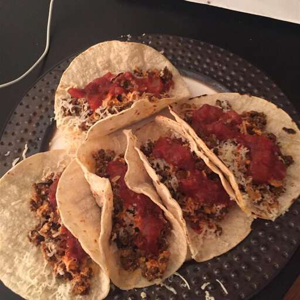

Tacos
Tacos are Fast and Easy to
cook.On top of being fast and easy to cook They are really Delicious
and nutritious.
Ingredients
- Sausage
- Oil
- 6 eggs
- 1/4 cup milk
- 1/2 teaspoon salt
- 6 inch corn tortialls (Roti)
- Cheese
- 1/2 cup salsa
- hot pepper sause
Steps
- Medium Heat Skillet
- Cook and Stir Sausage util browned and crumbly 5 to 7 min
- Clean Skillet
- Spray oil on Skillet
- Whisk together eggs, milk , salt and pepper in a bowl;
Pour into the prepared skillet
- Cook untill almost dry. Add Sausage; continue to cook and
and stir until firm
- Meanwhile Warm Second Skillet over high heat
- Cook tortillas until hot and crispy, about 45 sec/side
- Spray shredded Cheese evenly onto hot tortillas
- Top Each with Scrambled eggs,salsa and hot pepper sauce
- And ENJOY!